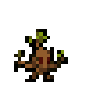
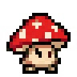
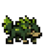
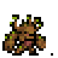
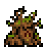

Broto Carnívoro

Repouso → passos → ataqueCogumelo Venenoso

Repouso → passos → ataqueLobo de Espinhos

Repouso → passos → ataqueEnt de Sangue

Repouso → passos → ataqueA Raiz Profana

Repouso → passos → ataque